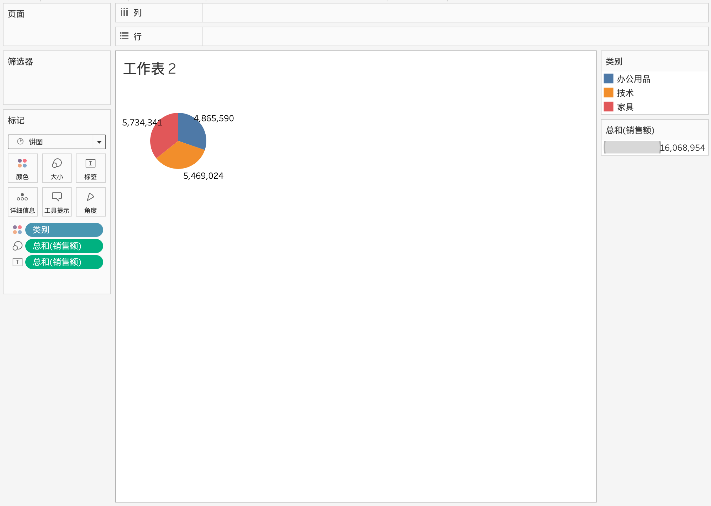
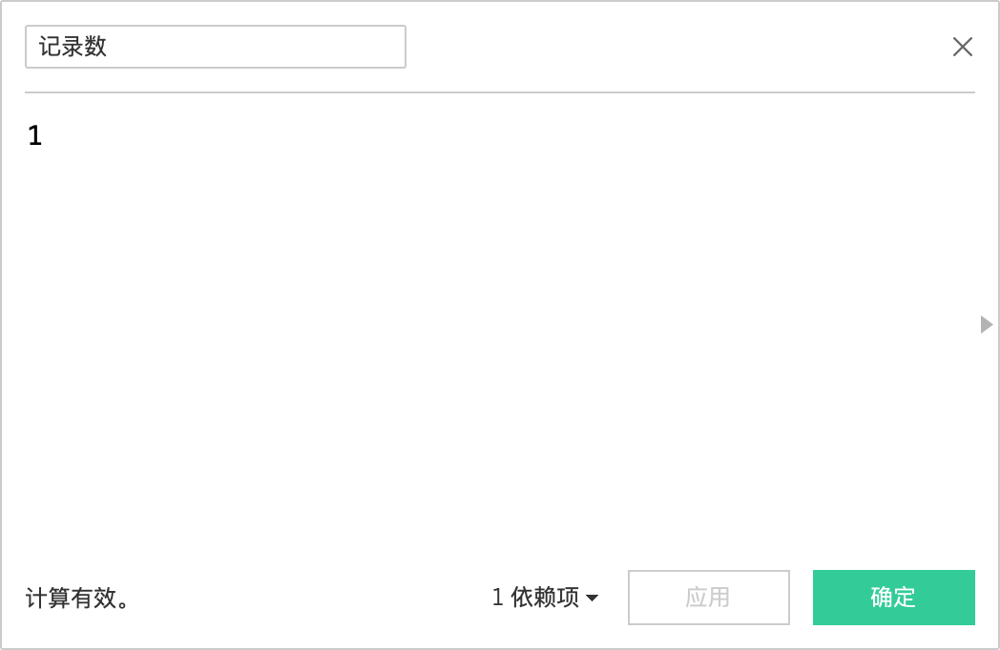
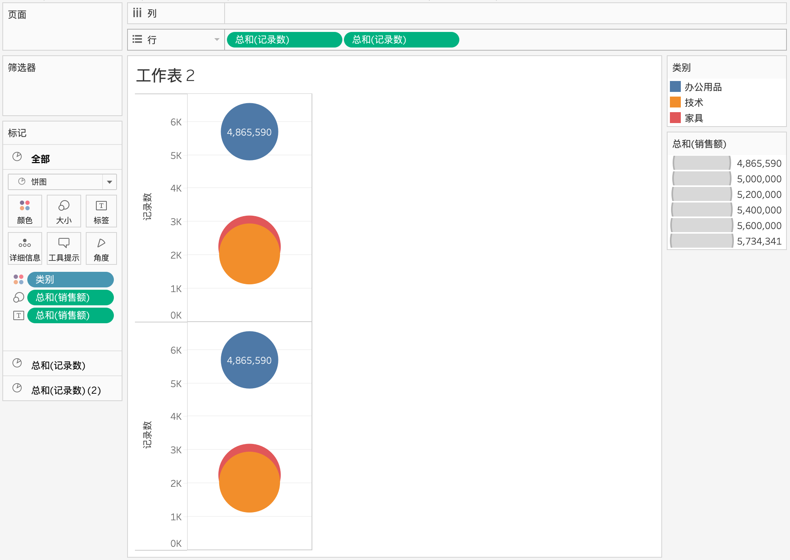
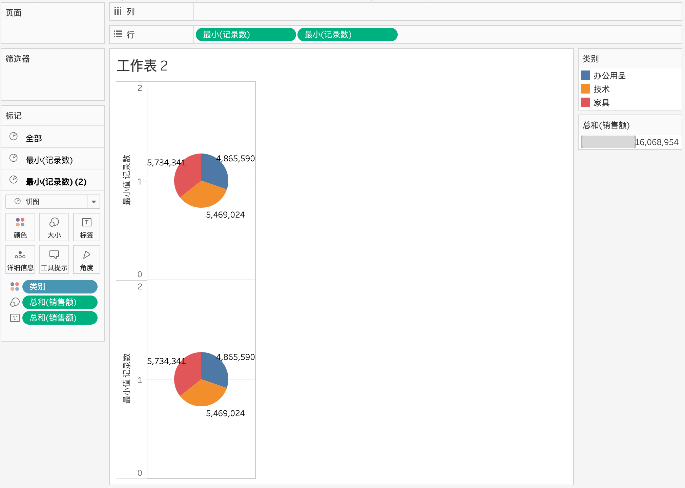
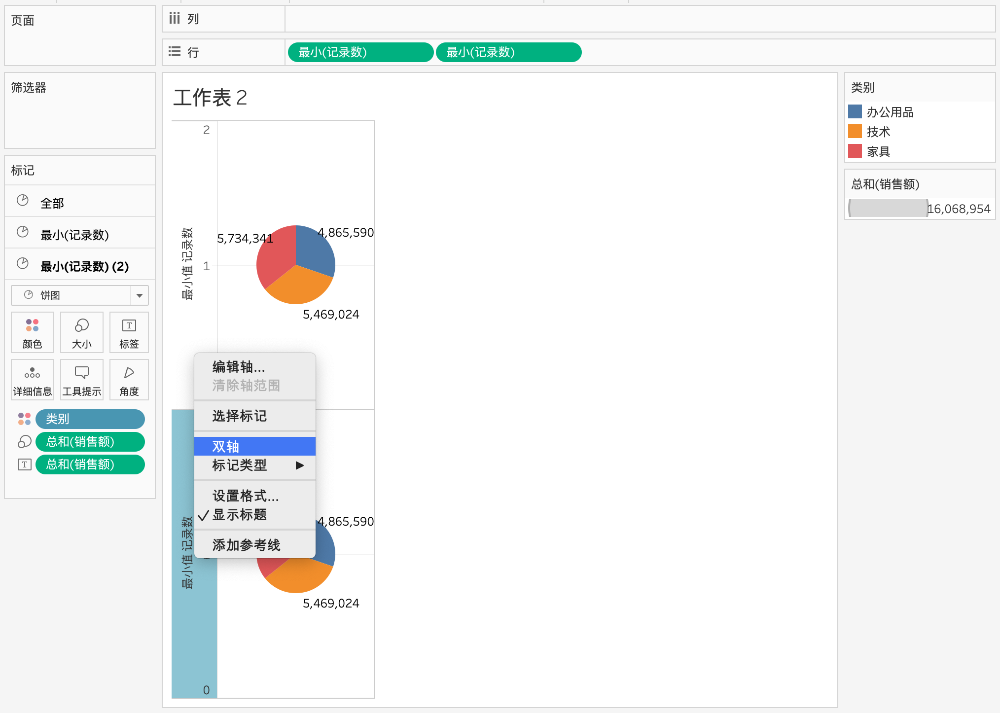
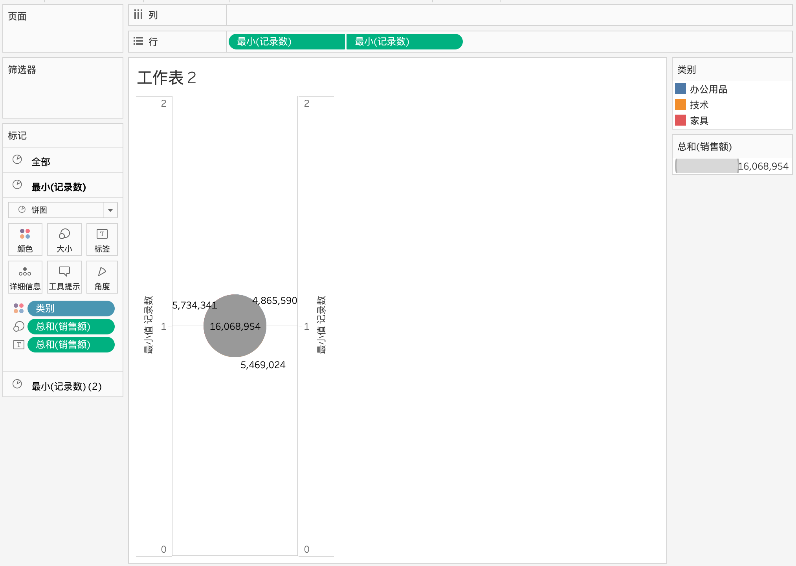
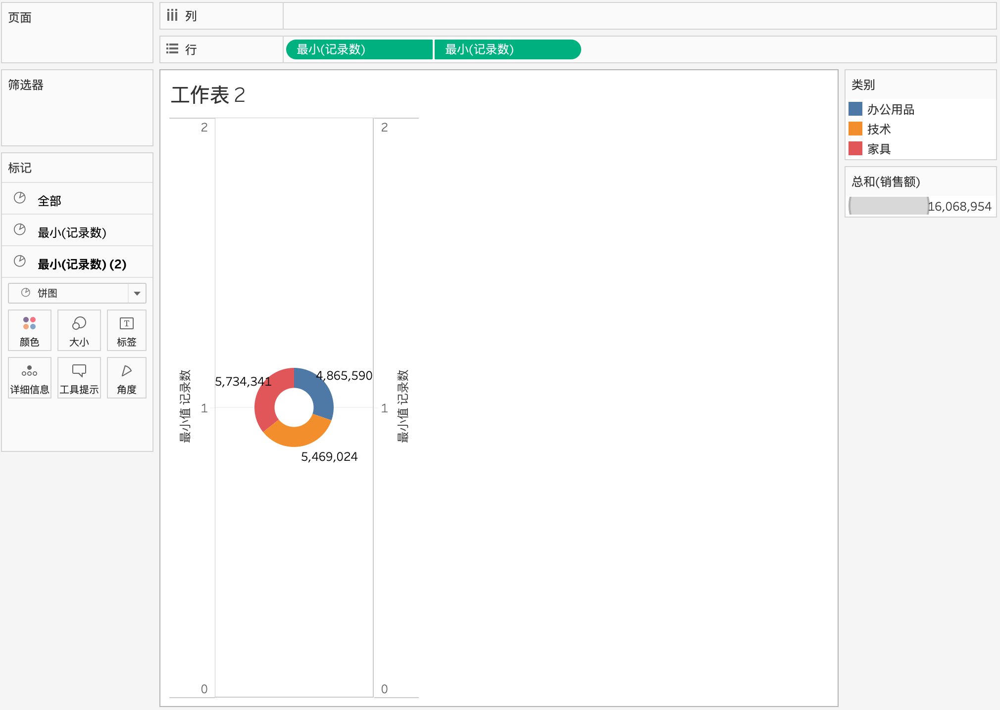
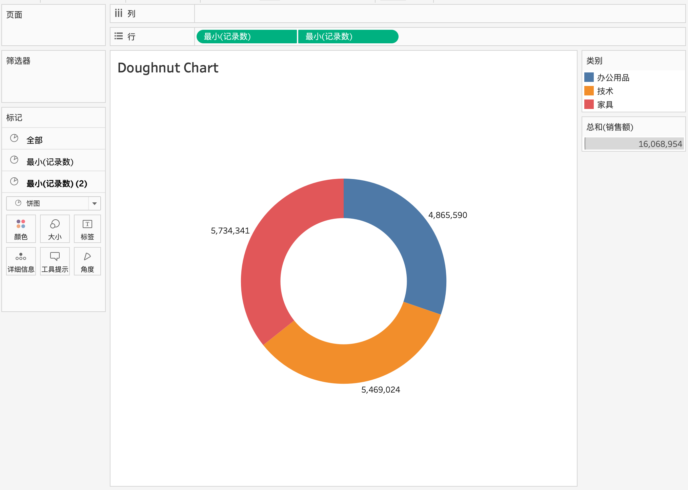

Tableau 中是没有环形图的图表的，主要思路是由两个饼图构成。内部是一个白色的小饼图，外部则是一个含颜色的大饼图。
下面将以 Tableau 自带的 Superstore 数据为例做一个环形图，用于展示各类别的销售额占比。
创建外饼图
在“标记”下面，选择“饼图”标记类型。
将类别拖到“颜色”。
将销售额拖到“大小”上。
将“销售额拖到“标签”。
根据需要调整饼图大小。

创建内饼图和双轴
将“记录数”拖到“行”。（新版Tableau没有该字段，可以创建一个计算字段，命名为记录数，公式写成1即可。注意改字段用于定位饼图的坐标，只要保证内外饼图一致，具体数值可随意写）

将“记录数”再次拖到“行”。

- 在“行”上，右键单击“记录数”的两个实例，然后选择“度量(求和)”>“最小值”。

- 在“行”上，右键单击“记录数”的第二个实例，然后选择“双轴”。

- 此时，两个饼图重合在一起
调整内饼图
在“标记”卡的底部，单击“最小(记录数) (2)”。
从“颜色”中移除类别。

从“大小”中移除“销售额。
单击“颜色”，然后选择与背景相同的颜色。在此示例中，单击白色。
单击“大小”，然后向左拖动滑块以缩小此圆。

格式美化
右键单击每个轴，取消选中“显示标题”。
调整内外饼图的大小
- 去掉相关的线
